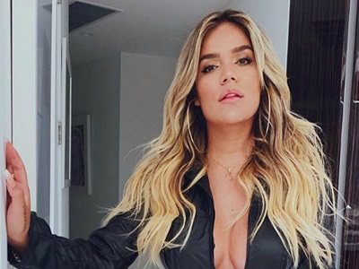

Maluma
Con tan sólo veintiséis años de edad, Juan Luis Londoño, mejor conocido por su nombre artístico, ‘Maluma’, (compuesto por las primeras letras de los nombres de su madre, su padre y su hermana), se ha convertido en uno de los artistas de mayor impacto en la música urbana y el ídolo juvenil de la música latina a nivel global. Ganador del Latin Grammy 2018 al Álbum Pop Vocal Contemporáneo (por F.A.M.E.) Maluma es uno de los cantantes más populares con fans activos en las redes sociales y el líder entre cantantes masculinos latinos con más de 49 millones de seguidores en Instagram.
Karol G
Carolina Giraldo nació el 14 de febrero de 1991. Su padre también era músico y desde niña tuvo una cercanía con la música. Durante su infancia participó en el reality Factor Xs y en 2010 pasó a ser corista de Reykon. En 2012 debutó con el tema 301 junto a Reykon, que llegó a ser número uno en varios canales de televisión y estaciones de radio. Estudió en el colegio Calasanz Femenino, Medellín. Giraldo estudió música en la Universidad de Antioquia, localizada en Colombia. En el año 2006, por primera vez, firmó con su nombre artístico, Karol G. .
Lunay
Jefnier Osorio es uno de los artistas más reconocidos, aunque probablemente le conozcas más bajo el nombre de ‘Lunay’. Nació el pasado 18 de mayo del año 2000, en la ciudad de Corozal en Puerto Rico. Es un cantante de reggaetón, género urbano y trap. Ha trabajado con grandes artistas como son Ozuna, Anuel AA, Daddy Yankee o Bad Bunny. Con lo cual, Lunay es una de las figuras musicales con más potencial de esta nueva generación de género urbano. Se ha ganado a pulso el gran respaldo por parte de un gran número de seguidores en redes sociales gracias a la publicación de tema scomo ‘Si te vas conmigo’ o ‘Déjame saber’. Todo esto, si contamos con la colaboración de Lyanno en el tema ‘A solas’ pero, sin duda, su punto de inflexión llegó de la mano del sencillo titulado ‘Soltera’. Desde entonces, ¡no ha dejado de brillar con luz propia!.